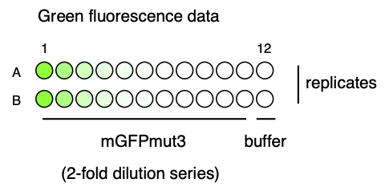
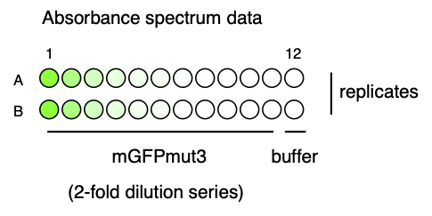
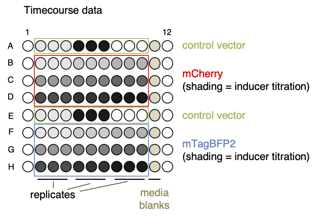

Examples and Demos
Function Demos with Example Data
A wide variety of example data is provided with the app to serve as an illustration of all the data types and formats Parsley can handle, as well as to let you test the app’s functionality. This Demos section includes details of the provenance of each of the provided Example data sets and a few Demos that illustrate how to build parsers for each of these.
Standard Data
Example data

A dilution series of the green fluorescent small molecule fluorescein (11 dilutions) was prepared in duplicate in rows A-B of a 96-well plate, with the highest concentration on the left (A1/B1), lowest on the right (A11/B11) and with buffer blanks in column 12 (A12/B12). The other wells of the 96-well plate were left empty.
This plate was measured for fluorescence intensity in the green fluorescence channel (ex. 485/20, em: 535/25), which I have called the GG2 channel, in a Tecan Spark plate reader. The first reading was at gain 40, and the second at gain 50. I have called the readings “GG2_gain40” and “GG2_gain50” respectively.
Spectrum Data
Example data

A dilution series of the green fluorescent small molecule fluorescein (11 dilutions) was prepared in duplicate in rows A-B of a 96-well plate, with the highest concentration on the left (A1/B1), lowest on the right (A11/B11) and with buffer blanks in column 12 (A12/B12). The other wells of the 96-well plate were left empty.
An absorbance spectrum scan was carried out on this plate in a Tecan Spark plate reader (wavelengths 200-800nm, with an interval of 1nm).
Timecourse Data
Example data

In this experiment, E. coli cells containing one of two fluorescent protein expression vectors (mCherry or mTagBFP2) were subjected to a titration of their transcriptional inducer (arabinose). The test plate also contained control strains containing an empty plasmid vector, and media blanks.
A timecourse experiment was carried out on this plate in a Tecan Spark plate reader, with three readings (OD600, red fluorescence and blue fluorescence) taken every 30 minutes for a total duration of 16 hours.